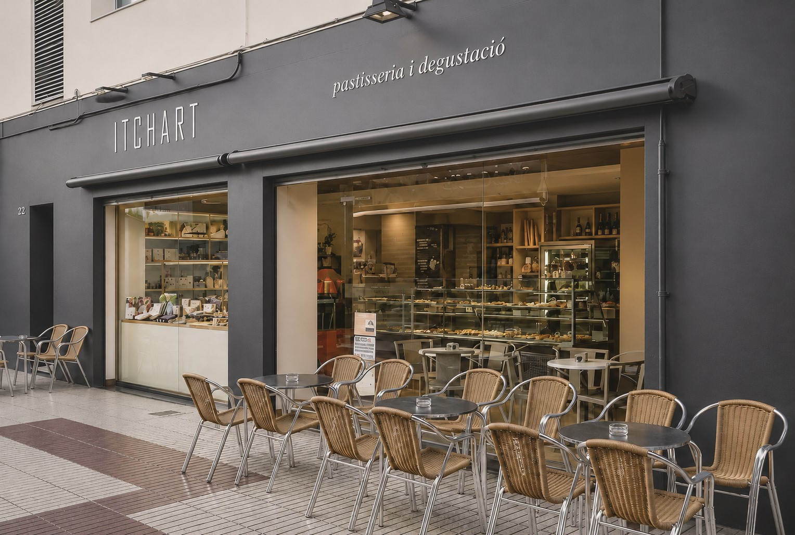

Itchart - Pastisseria i Degustació
Proyecto comercial - Calella

Concepto
El proyecto de reforma de Itchart - Pastisseria i degustació tiene como objetivo transformar un local comercial en un espacio acogedor, funcional y con una identidad propia.
La propuesta organiza el establecimiento para integrar la zona de venta, la exposición de producto y el área de degustación, favoreciendo una circulación clara y una experiencia cómoda para los clientes.
La materialidad del proyecto se inspira en el contraste entre lo dulce y lo salado, trasladando esta dualidad a través de una fachada de carácter sobrio y frío con un interior cálido y acogedor.
El proyecto contempla el diseño global del espacio y el seguimiento de la obra, garantizando la coherencia entre la propuesta inicial y el resultado final.
Ficha del proyecto
- Proyecto: ITCHART - Pastisseria i degustació
- Año de realización: 2012 - 2013
- Ubicación: 08370 Calella, Barcelona
- Cliente: Privado
- Uso del espacio: Comercial
- Superficie: 107,5 m²
- Estado previo: Pastelería existente a reformar
-
Trabajos realizados:
- Demoliciones y readaptación de espacios
- Selección de materiales y acabados
- Dirección y seguimiento de obra